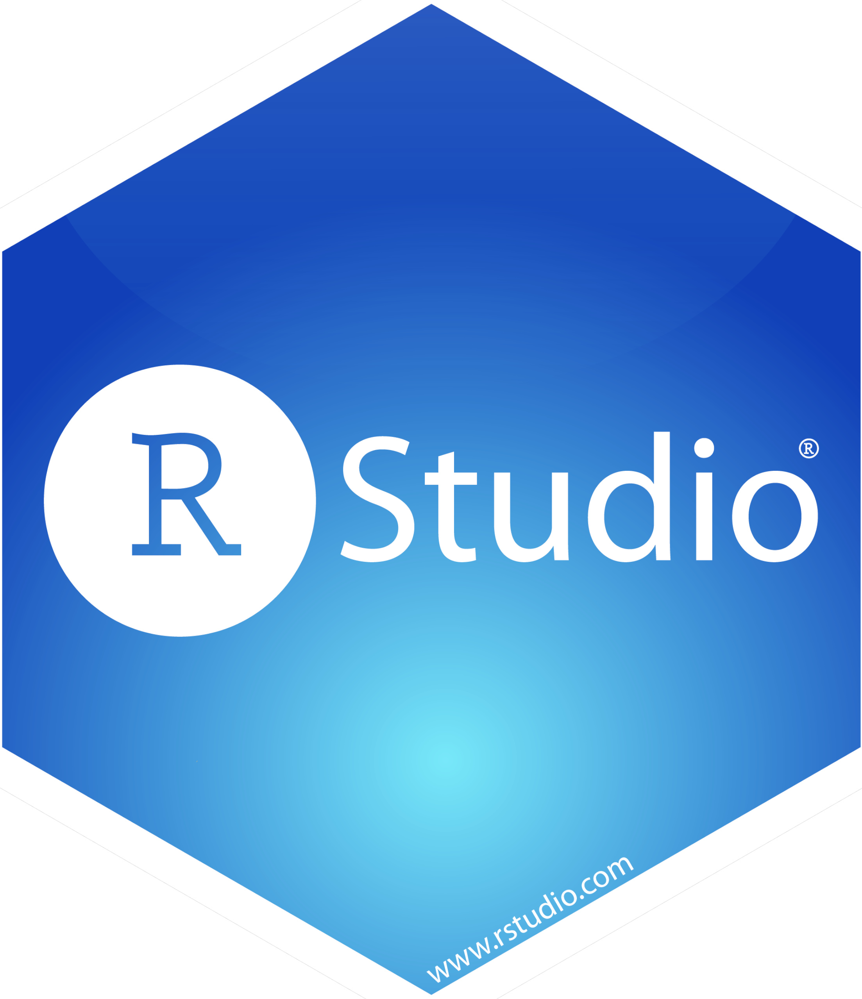

AFROMAPR 2025
CARTOGRAPHIER LES TERRITOIRES AVEC R ET MAGRIT


Claude GRASLAND
Université Paris Cité,
UMR Géographie-cités
Géraud MAGRIN
Université Paris 1 Panthéon Sorbonne
FR CIST & UMR PRODIG
Bamba VAKARAMOKO
Université Houphouët Boigny d’Abidjan
Département de géographie
Stéphane Koffi Yéboué KOISSY
Université Peleforo Gon Coulibaly de Korhogo
Laboratoire VST (Ville Sociétés Territoires)
Objectif
Conformément au programme de travail 2025-2029 approuvé par son Comité de Direction, la Fédération de Recherche CIST souhaite poursuivre ses actions de co-construction d’outils et méthodes des sciences territoriales destinés aux formateurs européens et africains. Après l’école d’été CIST « Outils et Méthodes des Sciences territoriales » (Paris, France, 2022 et Ouidah, Bénin, 2023) et l’école d’été « GEOUNIV’R 2024 » (Sousse, Tunisie, 2024), nous proposons d’organiser en juillet 2025 à Bouaké (Côte d’Ivoire) une école d’été centrée sur l’enseignement de la statistique et de la cartographie appliquées aux dynamiques des territoires dans un environnement informationnels (disponibilité et accès aux données) spécifique aux contextes ouest-africains, avec les logiciels libres et gratuits R et Magrit.
Reprenant la philosophie des deux écoles d’été précédentes, l’école 2025 visera trois objectifs :
L’apprentissage de deux logiciels libres et gratuits (R et Magrit) qui sont à la fois très performants et complémentaires dans la réalisation d’une chaîne de traitement qui va de (1) la collecte des données à (2) la représentations cartographique, (3) l’analyse statistique et (4) la restitution des résultats sous la forme de documents scientifiques, de diaporama ou de supports de cours.
L’application de ces outils à des questions d’enseignement et de recherche des pratiques de développement territorial dans le cadre d’ateliers spécialisés à partir de données et de questions proposées par les participants ou d’une enquête de terrain réalisée au début de la semaine de formation. Les thèmes des ateliers porteront sur la question des transitions territoriales, qui est au cœur du projet 2025-2029 du CIST et sera l’objet de son prochain colloque.
L’archivage et la reproductibilité des outils de formation, en utilisant des logiciels libres et des données disponibles dans l’ensemble des pays africains avec un focus particulier sur les pays d’Afrique de l’Ouest. La formation dispensée en Côte d’Ivoire en 2025 pourra ainsi être réappropriée par les participants des autres pays ayant participé à la première école d’été du CIST en 2023 (Sénégal, Bénin, Togo, Niger, Burkina Faso, Mali).
Magrit
Développée par l’UAR RIATE, Magrit est une application de cartographie thématique, principalement dédiée à l’apprentissage et à l’enseignement de la cartographie mais pouvant également être utilisée par tout utilisateur désireux de réaliser des cartes thématiques (journalisme, recherche, etc.).
Magrit permet de créer des cartes personnalisées avec ses propres données et de les partager en ligne. L’application est conçue pour être simple d’utilisation, tout en offrant des fonctionnalités avancées pour les utilisateurs expérimentés. Magrit est un logiciel libre (disponible sous licence GPL 3.0), gratuit, sans publicité ni collecte d’informations personnelles.
Son intérêt pour l’enseignement supérieur et la recherche dans les pays du Nord et du Sud avait été confirmé lors de l’école d’été CIST 2023 au Bénin. Cependant, un obstacle majeur à sa diffusion restait lié au fait que la première version du logiciel fonctionnait uniquement en ligne et supposait l’emploi d’une connexion internet, ce qui pouvait s’avérer problématique pour son usage dans les pays du Sud. La nouvelle version de Magrit permet désormais non seulement un usage en ligne mais aussi une installation simple et rapide sur les ordinateurs des utilisateurs et un fonctionnement hors connexion. Elle offre de plus de nouvelles fonctionnalités de cartographie et des gains en termes d’ergonomie et de rapidité.
L’école d’été AFROMAP’R sera donc l’occasion de diffuser plus largement cet outil en Afrique de l’Ouest et de bénéficier du retour des utilisateurs pour améliorer les futures versions. Il sera testé sur des bases de données de natures variées dans les domaines de la géographie humaine, de l’aménagement du territoire, de l’environnement et de la santé à travers différents ateliers.
R & Rstudio
Si R est d’abord connu comme le logiciel mondial de référence en matière d’analyse statistique, il offre des fonctionnalités de plus en plus nombreuses à travers l’ajout régulier de nouveaux packages spécialisés qui permettent - entre autres- de faire de l’analyse de réseaux, de l’analyse textuelle, du traitement d’images, de la gestion de bases de données et enfin de la cartographie et du SIG. Même si le coût d’entrée dans ce logiciel demeure plus élevé que celui d’autres logiciels de statistiques – car il suppose d’apprendre les bases de la programmation – il offre à long terme des perspectives particulièrement intéressantes d’intégration de chaînes de traitement combinant des étapes généralement effectuées avec des logiciels différents.
L’intégration offerte par R ne concerne pas uniquement les étapes de traitement statistique et cartographique, mais aussi la production de documents finaux grâce à l’environnement R studio. Celui-ci permet à l’utilisateur de rédiger des documents (cours, TD, articles scientifiques), des présentations (diaporamas) ou même des sites web interactifs en utilisant un unique langage d’écriture (R markdown ou Quarto) où alternent des blocs de textes (comme dans Word) et des blocs de programme R générant des tableaux et des graphiques (comme dans Excel) et des cartes ou images (comme dans un SIG).

L’apprentissage combiné de R et Rstudio est particulièrement précieux pour les enseignants qui peuvent ainsi plus facilement préparer et mettre à jour leurs cours ou bien générer des sujets d’examens différents pour plusieurs groupes de travaux dirigés. Les enseignants de statistique et de cartographie sont les destinataires les plus évidents de la formation proposée. Mais les autres enseignants chercheurs peuvent également en tirer parti pour des cours thématiques de géographie humaine, économique ou physique, d’économie ou de sociologie.
La formation AFROMAP’R ne sera donc pas centrée uniquement sur l’apprentissage de la statistique avec R mais aussi et surtout sur la façon de produire des documents de cours et de travaux dirigés combinant cartes, tableaux et graphiques dans un même document prenant la forme finale d’un polycopié ou d’un diaporama. Et sur la possibilité de procéder facilement à des mises à jour de ces cours en modifiant les données statistiques et cartographiques utilisées en entrée.
Des ateliers pratiques
L’école d’été AFROMAP’R visera avant tout une approche pratique et opérationnelle permettant aux enseignants qui suivront la formation de produire à la fin de celle-ci leurs propres cartes (avec Magrit), leurs propres analyses statistiques (avec R) et surtout leurs propres documents de cours ou de travaux dirigés (avec R studio). Ils pourront par la suite utiliser ces savoir-faire pour la production d’articles de recherche ou de travaux d’expertise mais ce n’est pas le but prioritaire de cette formation destinée d’abord aux enseignants.
Pour faciliter les échanges et l’apprentissage, on regroupera les stagiaires dans des ateliers thématiques qui mobiliseront dans tous les cas des données libres de droits et facilement accessibles en Côte d’Ivoire et dans les autres pays d’Afrique de l’Ouest. On peut citer à titre d’exemple les bases de données suivantes (à compléter) :
- IPUMS: données individuelles de recensement
- DHS : enquêtes internationales de santé
- Afrobarometer : enquêtes d’opinion pan-africaines
- Africapolis: données historiques sur l’urbanisation en Afrique
- GDL : données infranationales sur l’IDH et ses composantes
- OSM : données cartographique collaboratives
- .
Chaque atelier utilisant ces bases visera à produire des exemples pédagogiques portant en priorité sur la Côte d’Ivoire ou l’Afrique de l’Ouest, mais reproductibles sur d’autres pays et d’autres régions du monde. Ces travaux seront mis en ligne à l’issue de la formation sous la forme de publications pédagogiques signées par leurs auteurs.
Programme et calendrier (version provisoire)

- 29 Juin : Les participants seront accueillis le dimanche 29 matin sur le lieu de formation. L’après-midi sera consacré à l’installation des bases de données et logiciels sur les ordinateurs personnels.
- 30 Juin : La première journée sera consacrée à la présentation de la formation et l’apprentissage de l’environnement R Studio. Les étudiants apprendront à importer leurs données dans R, à rédiger quelques traitements de base et produire un document. L’après-midi sera consacré à un exercice de collecte de données de terrain avec Kobo Toolbox.
- 1-4 Juillet : Les matinées seront consacrées à l’apprentissage des méthodes d’analyse statistique (avec R) et de cartographie (avec Magrit ou R) à partir de jeux de données fournis par les formateurs. Les ateliers de l’après-midi viseront à reproduire ces méthodes sur des données apportées par les participants.
- 5 Juillet : Restitution des travaux des ateliers et remise des certificats de participation.